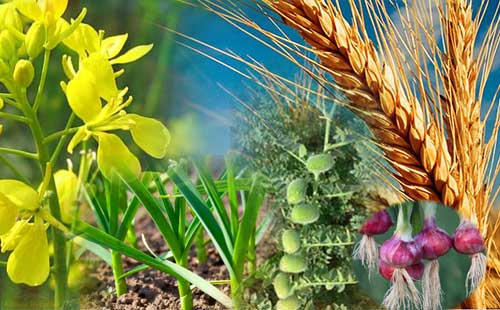
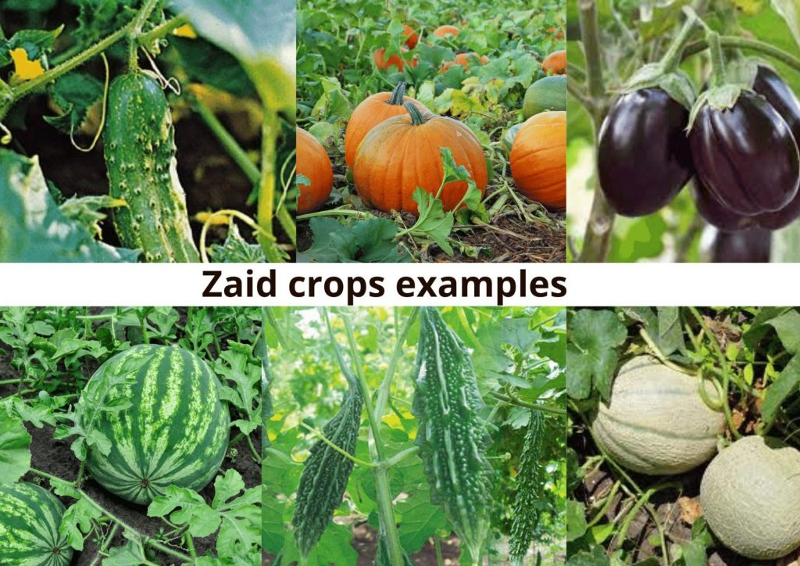
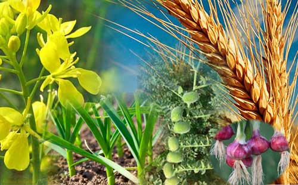
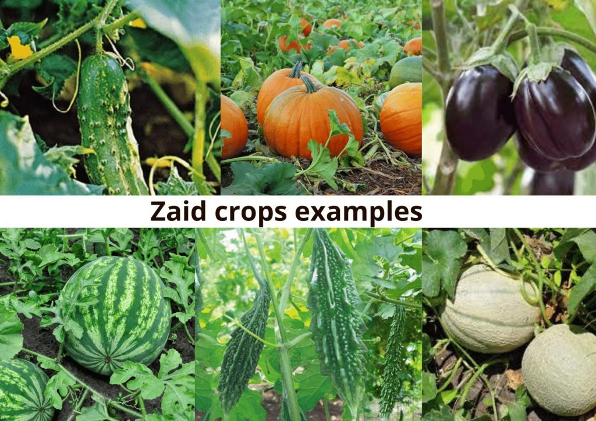
Pesticides are chemical substances that are meant to kill pests. In general, a pesticide is a chemical or a biological agent such as a virus, bacterium, antimicrobial, or disinfectant that deters,examples of pesticides are fungicides, herbicides, and insecticides. Examples of specific synthetic chemical pesticides are glyphosate, Acephate, Deet..etc
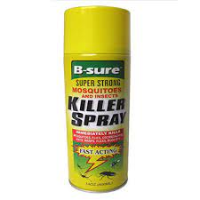 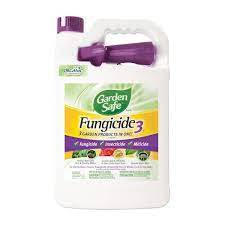 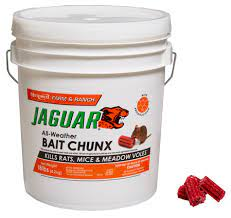 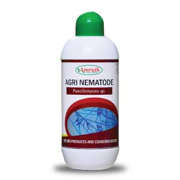Fertilizers are plant nutrients that come in different types: nitrogen-based for leaf and stem growth, phosphorus-based for strong roots and flowering, potassium-based for overall plant health, and organic ones from natural sources like compost or manure. They act like food supplements for plants, providing essential elements for their growth. However, it's crucial to use them carefully following instructions, as too much fertilizer can damage plants instead of helping them, akin to overfeeding someone causing harm instead of nourishment.
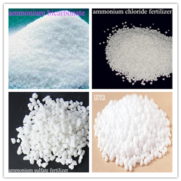 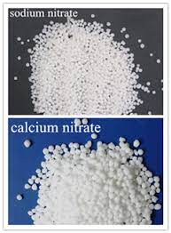 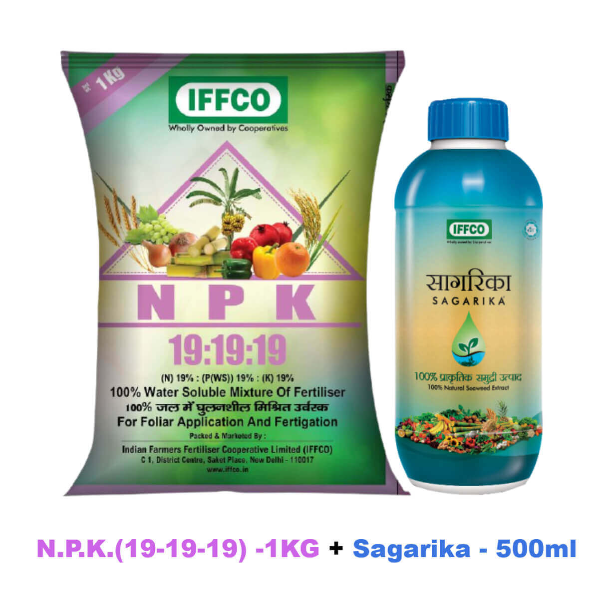 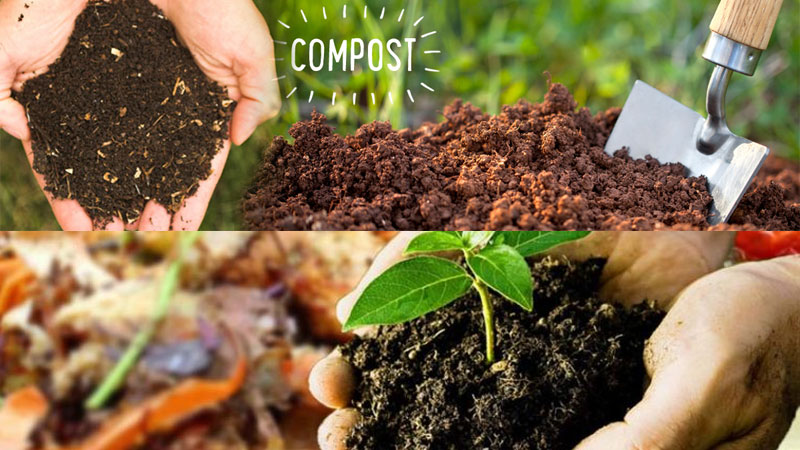